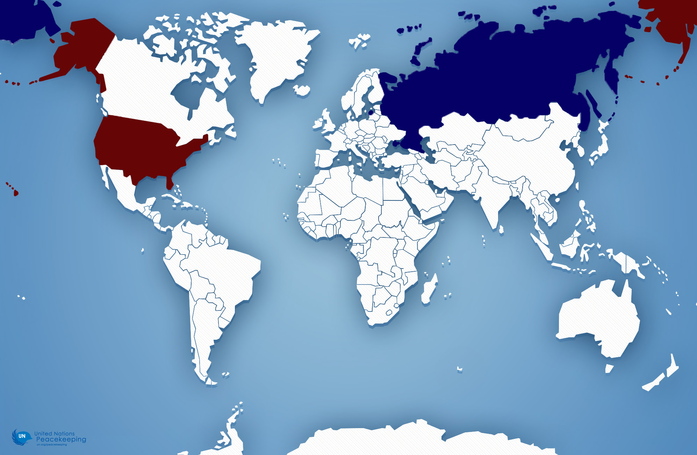
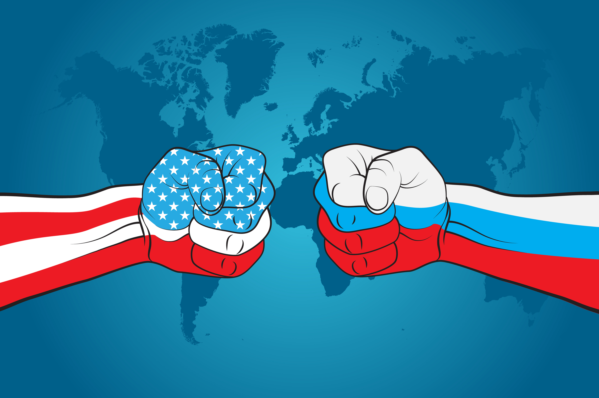
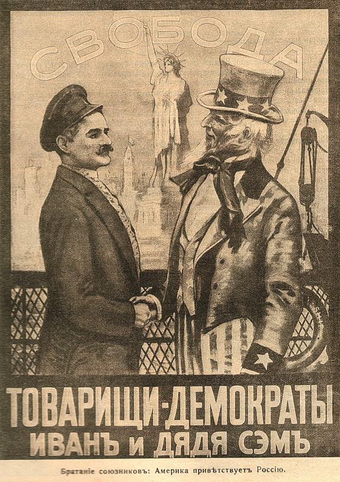
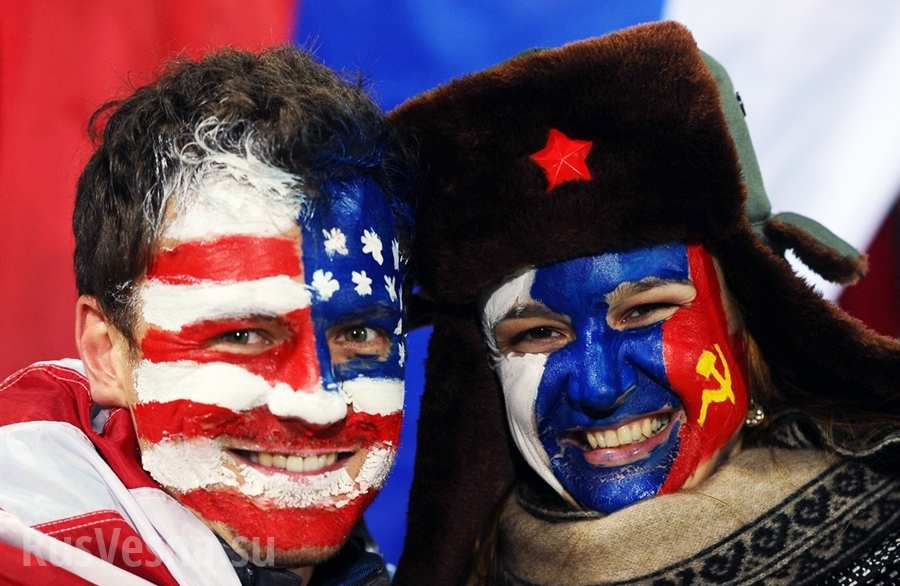
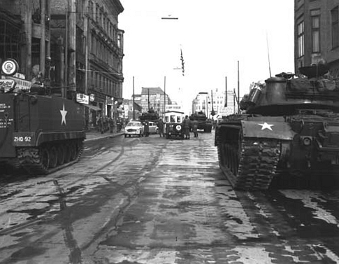
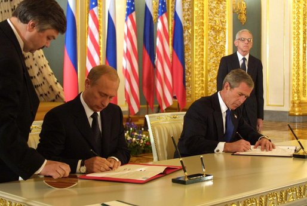
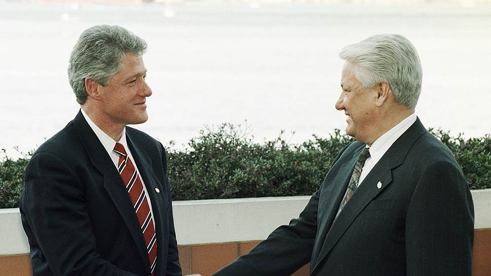
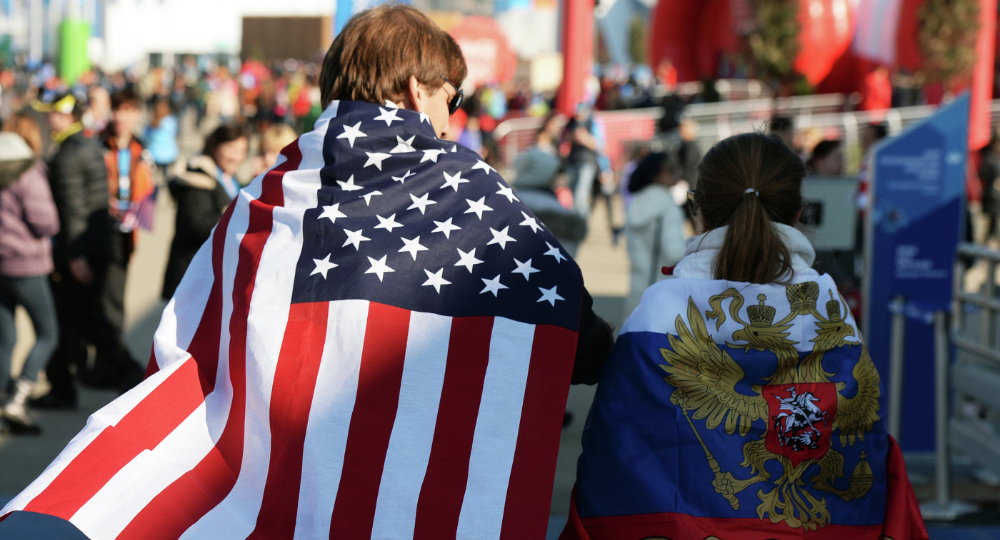
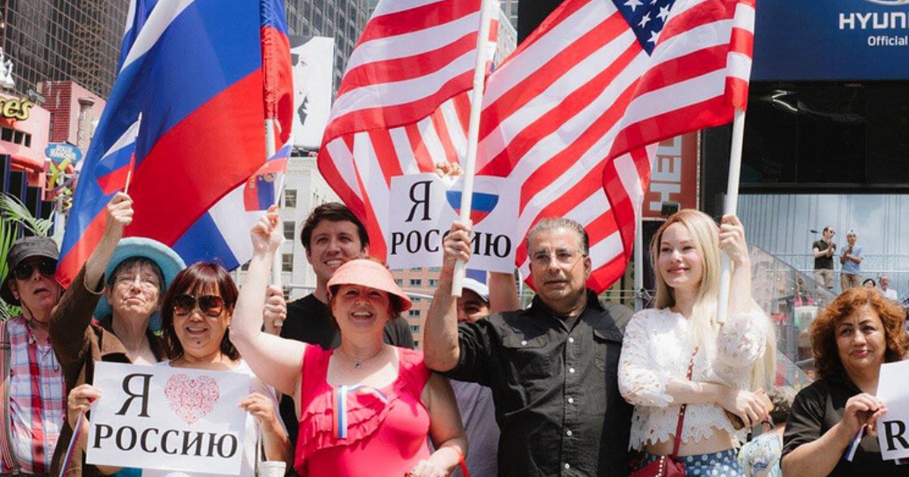

Nick Matsnev
Nowadays relations between two states are far from friendly, but it was not like that for years! Take your sit and look at the map below. What do you see? Correct, Russian and American territories. It has gentle connection at Beringov Channel.

1809-1885 of April, 1824, Russian-American friendship Convention, which made trade and development more useful for both countries. The Convention recorded the southern border of the Russian Empire in Alaska at latitude 54°40'. In 1832 was declared U.S.-Russian Treaty of Navigation and Commerce или Trade Treaty. It garanteed free tradeship in both countries and also safety and support of government on both territories. Nikolay the First, Russian Emperor, invited American engineers to participate in his technical projects. The peak of rapprochement between Russia and the United States were the 1860s - the time of the US Civil war and The Polish uprising of 1863-1864.Then Russia and the Northern American States had a common enemy — England, which supported both southerners and Polish rebels. In order to counteract the actions of the British fleet, the Baltic squadron of Admiral Sergey Lesovsky arrived in New York in 1863, and the Pacific squadron of Admiral Popov arrived in San Francisco. Based in the United States, Russian sailors were, in the event of war, to paralyze the British Maritime trade. Did You Know… That experts from the United States played a crucial role in the construction of the railway between Moscow and St. Petersburg and equipping it with rolling stock, in carrying out the first lines of the tehegraph and rearming the Russian Forces after the Crimean war.
1885-1913 since 1885, there has been a clash of strategic interests between these States and increased rivalry in all spheres of state relations. The entry of Russia and the USA into a higher stage of economic development leads to their foreign policy reorientation, rapprochement of the USA with great Britain and Japan and the American-Russian conflict of interests in the far East and Manchuria. In the Russian Empire, after the murder of Alexander II, there is a tightening of the political regime, which reinforces the American-Russian contradictions in the field of ideology and forms of government, which appeared long before. Therefore, it is at this time that a steady interest in the events taking place in Russia — in particular, in the activities of the organization "People's Will(Народная Воля)" and the Russian "nihilists" - arises in American society. The American press actively discussed the issues of Russian "nihilism", supporters and opponents of this movement gave public lectures and held debates. Initially, the US society condemned the terrorist methods used by Russian revolutionaries. In many ways, this was due to the manifestations of the phenomenon of political terrorism in the United States — it is enough to mention the attempt on the life of President Lincoln and D. Garfield. At this time, American society was inclined to draw historical parallels between the murders of Alexander II and Alexander II as the two great reformers.

In the 1880s, the United States finally established itself in the Pacific. In 1886, at the initiative of President Grover Cleveland, Congress held hearings on the future policy of the United States in the Pacific. The participants of the hearing came to the conclusion that of all the Pacific countries only the Russian Empire could potentially threaten the interests of the United States. The Russian-Japanese military conflict of 1904-1905 marked a new milestone in the development of American public opinion about Russia, putting it before the need to determine its attitude to each of the warring powers. Theodore Roosevelt actually supported Japan, and the syndicate of American banks, organized by John. Schiff, provided Japan with significant financial assistance. At the same time, efforts were made to close Russia's access to Western loans. Russia and the United States have consequently entered a new phase of relations — open competition. Public opinion in the United States was also extremely hostile to the Russian government.



Despite the military confrontation, Soviet-American cultural cooperation has intensified since the late 1950s. On January 27, 1958 in Washington the Agreement between the USSR and the USA on exchanges in the field of science, technology, education, culture and other fields was signed, and in 1962 the Society of Soviet-American friendship was created. In the early 1960s, the United States and the Soviet Union were on the brink of nuclear war when the Soviet Union, in response to the deployment of medium-range American missiles in Turkey, placed its own nuclear missiles in Cuba, which led to the Cuban missile crisis in 1962. Fortunately, thanks to the political will of the leaders of both countries, John Kennedy and Nikita Khrushchev, the military conflict was avoided.
After the collapse of the USSR in December 1991, Russia was recognized by the international community as a successor state of the Soviet Union, which, in particular, inherited a permanent seat in the UN Security Council. The foreign policy of the Russian state in the first years of its existence actually became a continuation of the foreign policy of its predecessor — the Soviet Union during the period of perestroika. Declaring its commitment to democratic ideals and universal values, the Russian leadership abandoned the priority of national interests, hoping to join the community of Western democracies. The fundamental principle of the foreign policy program, formulated in the early 1990s by President Boris Yeltsin and foreign Minister Andrei Kozyrev, was declared a strategic partnership between Russia and the United States, which was perceived as a natural ally of the new Russia. The liberal politicians who came to power in Russia were convinced that the elimination of the USSR eliminated all obstacles and at the same time created all conditions for the transition in relations with the West to full partnership and cooperation



“Russia is a continent disguised as a country, Russia is a civilization disguised as a nation.”
“America was not built on fear. America was built on courage, on imagination and an unbeatable determination to do the job at hand.”
“The price of freedom is eternal vigilance.”